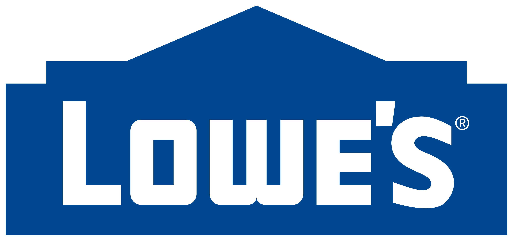
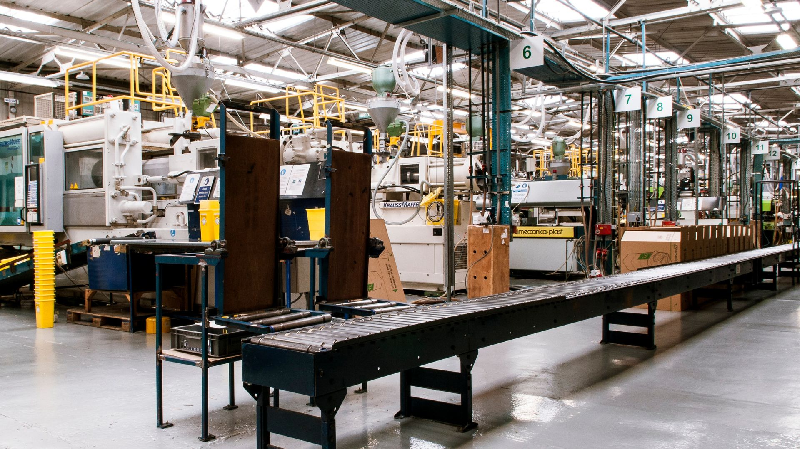

Reliable sourcing solutions across selected categories in Latin America.
Index-IBL helps institutional buyers identify, qualify, develop, and coordinate suitable manufacturers across selected categories in Latin America.
Dozens of sourcing programs with two of the world’s largest home improvement retailers.
Index-IBL supports sourcing work for Kingfisher and Lowe’s across multiple categories and buying cycles. Buyers operating at that scale set the standard for supplier qualification, execution discipline, and continuity. That is the standard the company is built to hold.

A sourcing office built for serious buying programs.
Index-IBL helps buyers move from sourcing opportunity to qualified manufacturer access, stronger coordination, and more dependable execution.
Its work spans supplier identification, qualification, product and private label support, and follow-through across the sourcing process.
Core services.
Supplier Identification & Development
Find and develop manufacturers that fit the program, not just the product.
Sourcing Project Support
Keep sourcing initiatives moving with structure, follow-up, and continuity.
Private Label & Product Development Support
Support differentiated product programs with manufacturer alignment and sourcing feasibility.
Quality & Supply-Chain Coordination
Improve visibility and follow-through once sourcing is underway.
Grouped category opportunity blocks.
Building, Improvement & Material Supply
A broad sourcing space for buyers evaluating building-related supply, material environments, and improvement-oriented categories where manufacturer fit and coordinated execution matter.
Industrial & Manufacturing Supply
A category environment for industrial buyers who need technical fit, operational reliability, and stronger control over supplier selection and follow-up.
Food, Ingredients & Agro-Industrial Supply
A selective sourcing space approached with greater qualification discipline, where supplier suitability, documentation fit, and supply reliability are especially important.
How the model works.
Index-IBL operates across Latin America, with its strongest execution depth across South and Central America, including Mexico.
That regional strength is supported by close follow-up on the ground and strategic commercial presence in the United States.
Index-IBL brings more than 20 years of sourcing experience across demanding international buying environments.
Its work includes long-duration relationships, multi-category programs, and high-volume operational support involving thousands of containers every year.
This experience supports a sourcing-office model built around disciplined qualification, coordinated execution, and long-term program reliability.

For selected situations, Index-IBL also supports broader international initiatives related to sourcing, market development, and execution planning.
Ready to discuss sourcing opportunities in Latin America?
If your company is reviewing a category, a supplier base, or a broader sourcing need, Index-IBL is available to continue the conversation.